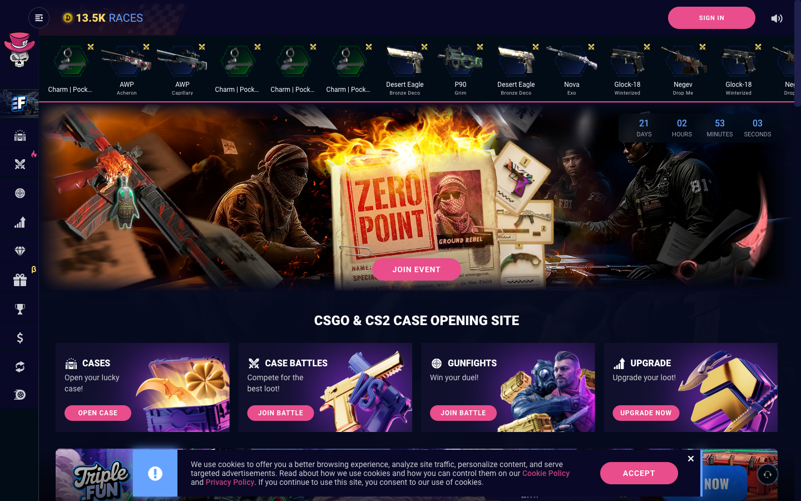
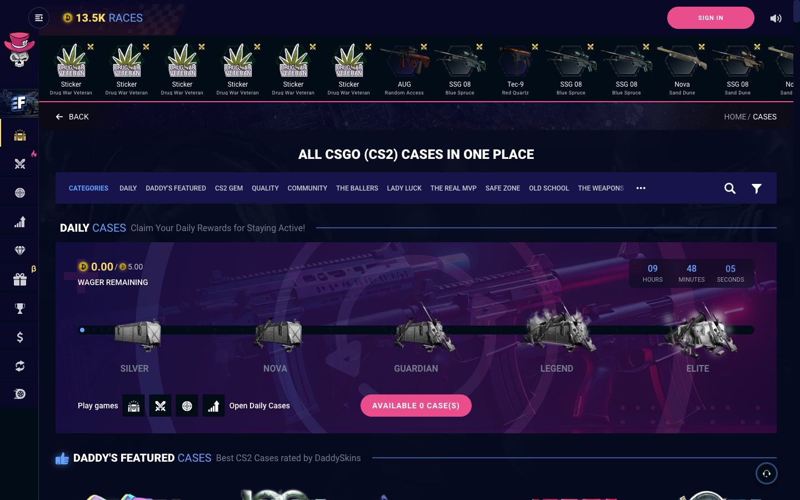
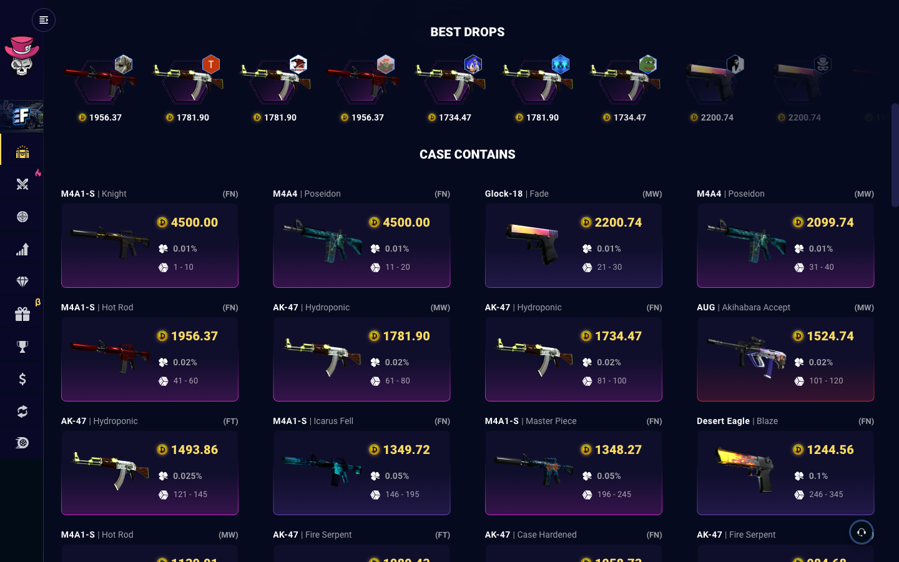

What daddyskins.com
actually does
The project inherits the baseline's structure. Seven things were listed as inherited and not one of them was written down anywhere, so the sentence "inherit the structure" had no source document behind it. This is that document: what pages exist, how they are reached, what is on the ones round 1 needs, and what colours the interface is built from. Walked in a live browser on public pre-login pages. No account was used and no login was performed.
Page inventory
Every internal link on the home page, confirmed against the footer and the catalogue.
Round 1 surfaces against the baseline
| Our round 1 surface | Baseline route | State on 11 Aug 2026 |
|---|---|---|
| Home | /en/ | Exists |
| Case opening | /en/cases and /en/case/<slug> | Exists, and it is two nodes, not one: a catalogue and a case detail page |
| Registration and account | /en/login, public profile /en/profile/<id> | Sign-in surface exists. The account area itself is [?], behind login |
| Deposit | [?] | No pre-login route found |
| Withdrawal to Steam | [?] | No pre-login route found |
| Provably fair | /en/provably-fair | Exists and redirects to the login page. Verified live in this session |
| Age gate and geo block | No route | Does not exist as a screen |
| Responsible play | No route | Does not exist at all |
Everything else the baseline runs today
LATER for us: /en/case-battles, /en/gunfights, /en/upgrade, /en/exchange, /en/giveaways, /en/events, /en/race, /en/rewards, /en/top-wins, /en/gift-cards, /en/affiliate-program, /king-of-the-pick, /blog/.
Service and policy: /en/faq, /en/support, /en/contacts, /en/terms, /en/privacy-policy, /en/cookie-policy, /en/refund-policy, /en/marketing-assets.
Volume, and the number D-D reduces from
239 distinct case slugs on the catalogue, counted by deduplicated href. Risk labels across them: High 43, Medium 162, Low 29, with 5 tiles carrying no label in the text layer. Visible prices in the same pass ranged from 0.53 to 161.36 coins. Decision D-D says the catalogue becomes smaller and backed rather than larger and unbacked. This is the number it starts from.
Page composition
The screens round 1 needs, as the baseline draws them today.

Case catalogue
A breadcrumb row with a Back control on the left and a Home / Cases trail on the right, an h1, then a horizontal category bar with overflow, search and filter. Categories: Daily, Daddy's Featured, CS2 Gem, Quality, Community, the ballers, lady luck, The Real MVP, Safe Zone, Old School, The Weapons, Classic, Harvest. Then category rows of case tiles.
A case tile carries item count, case name, a risk label of High-risk, Medium-risk or Low-risk, and the price in coins.

An inherited answer to a risk our own backlog carries in the open
Backlog row I2, the daily free case, entered MVP by founder decision with no parent in the three legal classes and with an explicit risk printed in its row: that it repeats daily the impression that opening is free, which is the impression the rest of the map spends its budget contradicting.
The baseline has already solved that exact problem, and not by making the case free. It gates the daily reward behind a wager requirement and presents it as a tier ladder, Silver to Nova to Guardian to Legend to Elite. That is an inherited answer to an open risk, and it belongs in front of the founder rather than inside a design decision.
Case detail, the core screen
Breadcrumb, a "How to video" link, h1 and subtitle, the case artwork centred. A left panel with "Cases to open:" as five hexagon slots for multi-open plus a speed control. A right panel with a like count and a risk meter: the words "Medium-risk" beside three skull icons, two filled and one empty.
Pre-login the open control is replaced by the line "You must log in to be able to Open cases and get your winnings chance" and a Sign in button. Below sit an explainer box on how prices set chances, a Steam trade settings warning, a Best drops row, and then the drop table.

This changes what one of our MVP rows is worth
Every item card in the drop table carries, pre-login and without an account: the drop chance as a percentage down to 0.01, and the ticket range such as "1 - 10" or "21 - 30". Fifty percentages were present in the text layer of the single case walked.
Backlog row D2, published chance and current value per item, is described in our map as one of two capabilities carrying the answer to barrier B7-2 at launch. The baseline already publishes both, per item, with the roll interval beside them. D2 is inherited, not added. The real distance between the baseline and our map is in the rows the baseline does not have: D3 the observed rate counter, D4 the published tested RTP and expected value at this entry cost, and a provably fair page a logged-out person can actually open.
Sign in
Logo, h1, the line "Please, sign in first", a single Sign in button, and "Don't have an account? Sign up". Below the fold a statistics band of four figures, read as 362 977 721 rising to 362 977 749 during the session, then 3 327 927, 1 862 804, and 679 rising to 681. Their labels are icons only and their meaning is [?]. The Sign in control is a button rather than a link and its destination resolves in script, so where it leads is [?]: following it would begin a login, which this walk does not do.
Colour, extracted from computed styles
Read off the live pages, not from a brand document, because there is no brand document.
The baseline has no token layer. A scan of every rule matching :root, html or body across its stylesheets returned zero CSS custom properties. Every value below is a literal in a rule.
Ground and surfaces
Accents
Text
Type and shape
- Family: Roboto with a sans-serif fallback. One family across the interface, no display face observed
- Primary button: fill
#E94D8B, text white, weight 700, size 14px, border radius 25px, a full pill - Geometry: rail 70px, header about 66px, ticker 120px
What was not extracted, with an owner
The rarity ladder. Rarity renders as a per-card background gradient rather than a flat colour on the element holding the percentage, so a value-level ladder was not read in this pass. It is visible in the drop table capture above and it is [?] at value level. Owner: stage 06, which is the stage that needs it. Naming the owner here means the next stage does not rediscover the gap.
The palette collision nobody recorded
Every documentation page in this repository, seven html files and _nav.css, is built on #E94D8B, #65A3FF and #FADA62, with a card ground of #0A0827. Those are the baseline's three accents exactly, and #0A0827 is one hex digit from the baseline's #090827.
The project's own pages have been running the baseline palette since the structure migration, while D-03 said the palette was not inherited and stage 06 would derive one from scratch. Nobody wrote it down and nobody noticed.
This decides nothing and is not presented as a decision. D-18 holds one question open, whether taking the colours means the exact values or the register carried by our own values, and holds it open specifically until values exist. They now exist, and so does the fact that three of them are already in use here. That is context the answer should have, and it is exactly the kind of fact that becomes invisible the moment it stops being surprising.
Compliance, as it exists today
This section is short because the subject is.
Age: there is no gate
No interstitial, no birth date field, no checkbox, nothing on the sign-in page. The entire age control on the product is one FAQ answer, quoted verbatim as read on 11 August 2026:
WHO CAN PLAY ON DADDYSKINS? Only people who are at least the age of 18+ are allowed to play on our site. In addition, some countries may have restrictions to accessing sites like ours, we strongly recommend you follow those government laws, as we cannot always apply technical methods for restricted access.
The word "18" appears exactly twice in the text layer of the sign-in page, and both instances are the weapon Glock-18 in the drop ticker.
This closes part of an evidence hole rather than leaving it open. Decision D-13 recorded that after two mining passes not one user anywhere describes meeting an age gate on arrival. The reason is now on the record: on this product there is nothing to meet. The hole was not a gap in the mining, it was an accurate reading of a product that has no such screen.
Geo: the same sentence, carrying an admission
The FAQ answer above is the whole of it, and it says out loud "we cannot always apply technical methods for restricted access". Whether any technical geo block exists at all is [?].
Responsible play: zero
A search of the FAQ text for responsible play, self exclusion, deposit limit, cool down and gambling returned zero matches. There is no responsible play link in the footer and no route anywhere in the inventory.
Consequence for round 1. The responsible play page, restored to round 1 by founder decision on 11 August 2026, and the age gate are the only two round 1 surfaces with no baseline to inherit from at all. Everything else has a structure to start from. These two are drawn from the compliance constraint in CLAUDE.md and from cited law, or they are not drawn honestly.
What this walk changes
In order of how much it changes, not in the order it was found.
| # | Finding | Who owes an answer |
|---|---|---|
| 1 | The rail is one-ninth useful in round 1. Eight of nine destinations are LATER. The navigation model cannot be inherited as drawn without shipping a mostly empty primary navigation. | Stage 03a, step 3 |
| 2 | Case opening is two nodes, not one. Catalogue and case detail carry different jobs and round 1 inherits both. | Stage 03a, step 2 |
| 3 | D2 is already built. Published chance and current value per item, with the roll interval, exist pre-login. The real gap is D3, D4 and an openable provably fair page. | Stage 03a, step 5 tracing |
| 4 | The daily free case has an inherited answer to its own recorded risk: a wager requirement and a tier ladder instead of a giveaway. | The founder, not the IA |
| 5 | The provably fair page still redirects to login, verified today. The single highest-leverage fix named in research.md has not moved in two months. | Already in round 1 scope |
| 6 | Two round 1 surfaces have no baseline at all, the age gate and responsible play. | Stage 03a, drawn from constraint and cited law |
| 7 | 239 distinct cases is the number D-D reduces from. | Stage 03b |
Source index
Every row was opened in a live browser on 11 August 2026, pre-login, in one session. No account, no login.
| What it gave | URL | Proof |
|---|---|---|
| Page inventory, header, rail, ticker | daddyskins.com/en | walk_home_1440.png |
| Footer re-walk: statistics strip, four columns, identification line, payment marks | daddyskins.com/en | walk_footer_1440.png |
| Mobile navigation model | daddyskins.com/en at 390px | walk_home_390.png |
| Categories, daily ladder, 239 slugs, risk labels | daddyskins.com/en/cases | walk_cases_1440.png |
| Case detail, pre-login state, risk meter, multi-open | daddyskins.com/en/case/premium | walk_case_detail_1440.png |
| Drop table, per item chance and ticket range | daddyskins.com/en/case/premium | walk_case_droptable_1440.png |
| Provably fair redirect, sign-in composition, footer | daddyskins.com/en/provably-fair | walk_pf_redirects_to_login_1440.png |
| Age answer, absence of responsible play | daddyskins.com/en/faq | walk_faq_age_1440.png |
| Colour values, type, geometry | computed styles on the pages above | values in the Colour section |